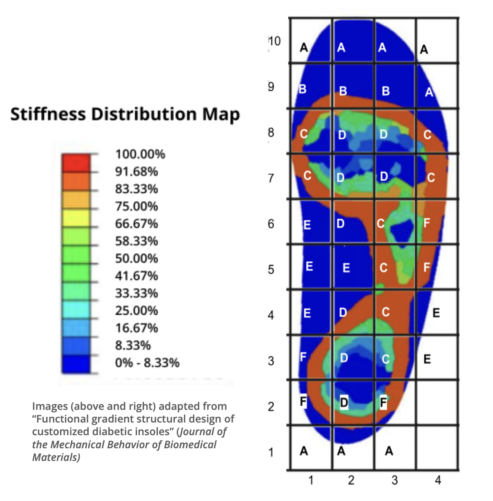
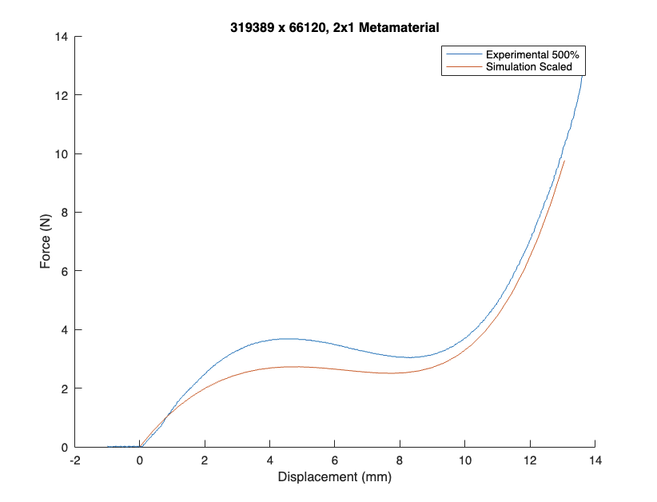

The aim of this project is to design a custom orthotic insole using an array of metamaterial unit cells. With a modular design, orthotic insoles can be assembled quickly from individual cells based on force distribution maps of a patients sole. This eliminates the need for foot sole molds and reduce production time.
Currently, I am working on experimental verification of the metamaterial shape generation and manufacturing stiffer, smaller, unit cells that can be utilized in the orthotic
Advisors: Gokcen Guner (PhD Candidate), Alexandra Ion (PI), and Kaushik Dayal (PI)
*This project is part of my Senior Research Thesis and will be presented at the CMU Meeting of the Minds in May 2025

